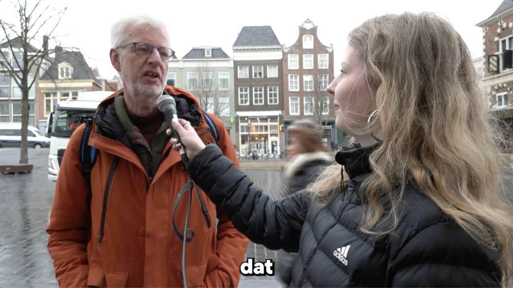

Pre-productie · Vega Interview
Vega Interview
Een interviewproductie over vegetarisch eten, waarin we mensen op straat een paar korte vragen stellen. Een teamproductie waarin ik de camera deed.
Rollen
PresentatorRosalie
Regie / producerTaya
CameraBirk
GeluidMarrit
Interviewer / assistentIlona
Interviewvragen
- Bent u vegetarisch?
- Zo ja: hoelang bent u al vegetariër?
- Zo nee: heeft u ooit vegetarische gerechten geprobeerd?
- Wat is voor u het belangrijkste bij eten? (smaak, gezond eten, of iets anders)
- Heeft u ook vegetarische vrienden?
- Wat vindt u van vegetarisch eten?
- Voor wie zelf vegetarisch is: heeft u een tip of advies voor mensen die vegetarisch willen gaan eten?